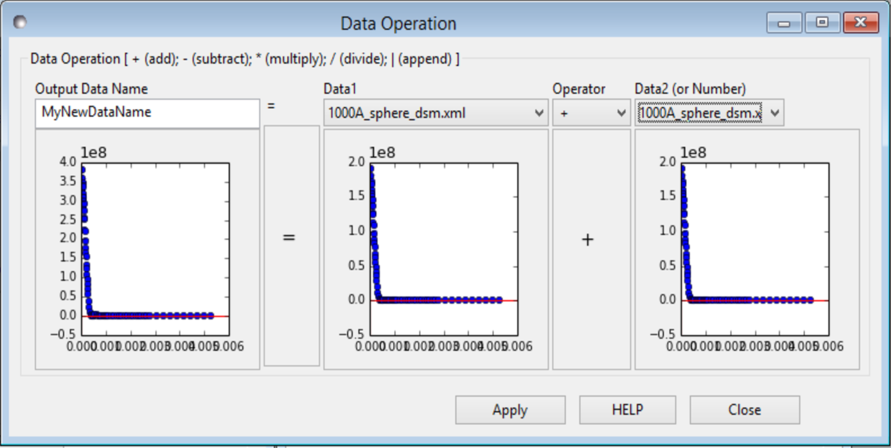

Data Operations Tool
Description
This tool permits arithmetic operations between two data sets. Alternatively, the last data set can be a number.
NOTE! When Data1 and Data2 are both data, their Q (or Qx and Qy for 2D) value(s) must match with each other UNLESS using the ‘append’ operator.
Using the tool
- Ensure you have loaded data into the Data Explorer (see Loading Data).
- Select Data Operation from the Tool menu on the SasView toolbar.
- Select a dataset/theory in the drop-down menu Data1. A mini-plot of the data will appear underneath.
- Select a dataset/theory in the drop-down menu Data2 or select Number and enter a number in the box that appears alongside.
- Select an arithmetic operator symbol from the Operator drop-down. The available operators are:
- + (for addition)
- - (for subtraction)
- * (for multiplication)
- / (for division)
- | (for combination of two data sets)
If two data sets do not match, the operation will fail and the background color of the combo box items will turn to red (WIN only).
- If the operation is successful, hit the Apply button to make the new dataset. The new dataset will appear in the Data Explorer.
NOTE! Any errors and warnings will be displayed at the bottom of the SasView window.
Note
This help document was last changed by Steve King, 01May2015